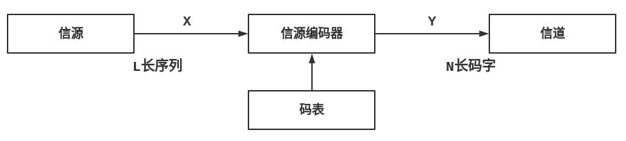
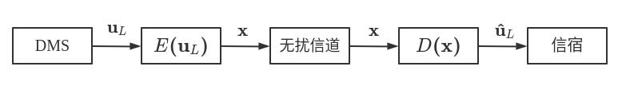

# 信源编码
对于信源输出序列{uL}={u1,u2,...,uL}，满足其中元素都在字母表A=[a1,a2,...,aKp1,p2,...,pK] 中。找到一个到码字集合B={b1,b2,...,bD} 上的码字序列{vN}=(v1,v2,...,vN) 的映射，这个过程也就是信源编码。
对于有D 个元素的集合B，到这个码字集合上的编码也就是 D 元码。
如果B 中各个码字长度相等，那么这个编码就是等长编码，反之为不等长编码。
编码的目的是为了对通信系统进行优化，信源编码可以减少信源发出的消息的冗余度，提高单位时间内传输的效率。
# 离散信源无失真等长编码

对于输出长度为L、字母表大小为K 的信源，编码为长度为N 的D 元码字，如果需要无失真编码，至少应该有DN≤KL，也就是NlogD≤LlogK。
实际上许多时候这样的无失真编码是难以达成的，一个较弱的条件是几乎无失真等长编码。
在L 足够大的条件下，满足
NlogD≤L[H(U)+εL]
H(U) 为信源熵，εL 和L 有关，当L→∞，有ε→0。在这样的情况下，编码可以几乎不损失信息。
说明
考虑信源输出的概率分布，有消息的概率p(uL)=∏lp(ul)，其信息量I(uL)=−logp(uL)=−log∏lp(ul)=∑l[−logp(ul)]=∑lI(ul)，平均信息量IL=I(uL)/L。
记信源熵为H(U)，I(ul) 的方差为σI2，那么IL 的均值为
E[LI(uL)]=E[L∑lI(ul)]=L∑lE[I(ul)]=H(U)
IL 的方差为
E[LI(uL)−H(U)]2=L2E[I(uL)−LH(U)]2=L2E[∑lI(ul)−LH(U)]2=L2LσI2=LσI2
由 Chebyshev 大数定理可知，对于∀ε>0：
Pr[LI(uL)−H(U)>ε]<Lε2σI2=δPr[LI(uL)−H(U)≤ε]≤1−Lε2σI2=1−δ
使得δ=ε，有
Pr[LI(uL)−H(U)≤ε]≥1−ε
也就是L 足够大的时候，IL 取值几乎等于H(U)。这样便有：
NlogD>LH(U)
# 渐进等分性和典型序列
# 定义
大数定律可以告诉我们，一个试验重复了足够多的次数之后，一个事件发生的频率会接近该事件发生的概率。当一个随机变量的序列足够长，那么这个序列其中一部分序列出现的频数会接近于其出现的概率，且这些序列的概率趋近于相等，概率之和接近于 1。这些序列也就是典型序列 (Typical Set)，这个性质就是渐进等分性 (Asymptotic Equipartition Property, AEP)。
对于典型序列，给出下面的定义：
令H(U) 为集合{U,p(ak)} 的熵，∀ε>0，将
TU(L,ε)={uL:H(U)−ε<IL≤H(U)+ε}
定义为信源U 输出长度为L 的典型序列集，或弱ε 典型序列集，其补集为非典型序列集。
一个更强的定义是强典型序列集 (Strongly typical set)：
TU(L,ε)={uL:L[p(ak)−ε]−ε<Lk≤L[p(ak)+ε]}
其中Lk 为序列中ak 出现的次数。
利用前面的性质和定义，我们可以知道：
- 给定信源{U,p(ak)}，ε>0，当L→∞，Pr{TU(L,ε)}→1。
- 对于任意小ε>0，存在正整数L0，使得L>L0，Pr{uL∈TU(L,ε)}≥1−ε。
同时我们能够推出典型序列的一些性质：
# 特定序列出现概率
如果uL∈TU(L,ε)，那么2−L[H(U)+ε]≤p(uL)≤2−L[H(U)−ε]，即p(uL)≈2−LH(U)。
证明
通过定义式：
TU(L,ε)={uL:H(U)−ε<IL≤H(U)+ε}
有
H(U)−ε≤−L1logp(uL)≤H(U)+ε
也就是
−L[H(U)+ε]≤logp(uL)≤−L[H(U)−ε]
两边取 2 的幂，得证。
# 典型序列数目
L 足够大的情况下，给定信源{U,p(ak)}，ε>0，典型序列个数∣TU(L,ε)∣ 满足(1−ε)2L[H(U)−ε]≤∣TU(L,ϵ)∣≤2L[H(U)+ε]，也就是∣TU(L,ε)∣≈2LH(U)。
证明
1=UL∑p(uL)≥uL∈TU(L,ε)∑p(uL)≥uL∈TU(L,ε)∑2−L[H(U)+ε]=∣TU(L,ε)∣2−L[H(U)+ε]
即
∣TU(L,ε)∣≤2L[H(U)+ε]
由
2−L[H(U)+ε]≤p(uL)≤2−L[H(U)−ε]
有
1−ε≤uL∈TU(L,ε)∑p(uL)≤uL∈TU(L,ε)∑2−L[H(U)−ε]=∣TU(L,ε)∣2−L[H(U)−ε]
即
∣TU(L,ε)∣≥(1−ε)2L[H(U)−ε]
这样子，一个离散无记忆信源 (discrete memoryless source, DMS) 输出的消息序列应该是分为两个部分：典型序列和非典型序列。
其中各个典型序列出现的概率近于相等，平均符号信息量接近于信源熵且概率之和接近于 1。
# DMS 编码模型和信源编码定理

这样一个 DMS 信源编码模型中，我们定义编码速率R=L1logM=LNlogD。
如果译码结果u^L 和原始消息uL 不相同，那么说明有错误，概率为pe=p{u^L=uL}。
如果给定信源和编码速率R，对于任意ε>0，∃L0，使得码长L>L0，pe<ε，那么R 是可达的。
而编码速率是否可达，由下面的无扰编码定理给出；
信源编码定理 / 无扰编码定理
若R>H(U)，则R 是可达的。若R<H(U)，则R 是不可达的。
对于给定的 DMS 信源，若D 元码速率R 超过信源熵，即LlogDN≥[H(U)+ε]，则存在有编码方式，使得L 足够大时译码错误概率任意小。
证明
充分性：
另R>H(U)，取L>L0。通过上面的典型序列数目的结论，对于ε>0，可以选择足够大的L 使得
∣TU(L,ϵ)∣≤2L[H(U)+ε]<2LR
对于每个典型序列uL∈TU(L,ε)，将其依次编号为1,2,...,2LR−1，采用相应号码的二进制序列来表示对应的码字。对于非典型序列u∈TU(L,ε)，采用第2LR 号号码000...000 表示。
这样，在译码的时候，如果(x)<2LR，u^L=uL。而若(x)=2LR，u^L=(000...000)。
那么pe=Pr{u^L=uL}=Pr{uL∈T(L,ε)}≤ε。这样子R 是可达速率。
必要性：
令R=H(U)−2ε，那么正确译码的概率是Pr{u^L=uL}=Pr{uL∈TU(L,ε)∩u^L=uL}+Pr{uL∈TU(L,ε)∩u^L}。
因为R=H(U)−2ε，所以有2L[H(U)−2ε] 个码字，又因为典型序列个数至少为(1−ε)2L[H(U)−ε]，所以在TU(L,ε) 中可以找到码字的概率是：
p≤(1−ε)2L[H(U)−ε]2L[H(U)−2ε]=1−ε2−LεPr{uL∈TU(L,ε)∩u^=uL}≤p≤1−ε2−Lε
而
Pr{uL∈TU(L,ε)∩u^L=uL}≤ε
因而
Pr{u^L=uL}≤1−ε2−Lε+ε
随着L 的增加，上面的式子趋于 0，也就是pe→1，因而R 不可达。